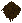
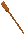
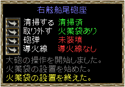

light cannonball [大砲の弾(軽)] （作成に
light cannonball [大砲の弾(軽)] （作成に ×6が必要） heavy cannonball [大砲の弾(重)] （作成に×12が必要）
×6が必要） heavy cannonball [大砲の弾(重)] （作成に×12が必要） light grapeshot [大砲用散弾(軽)] （作成に×6、
light grapeshot [大砲用散弾(軽)] （作成に×6、 ×1が必要） heavy grapeshot [大砲用散弾(重)] （作成に×12、×2が必要）
×1が必要） heavy grapeshot [大砲用散弾(重)] （作成に×12、×2が必要）１）大砲の弾
鍛冶スキルを使い作成します。弾は2種類の大砲用にそれぞれ2種類あり、計4種類です。 light cannonball [大砲の弾(軽)] （作成に×6が必要） heavy cannonball [大砲の弾(重)] （作成に×12が必要） light grapeshot [大砲用散弾(軽)] （作成に×6、×1が必要） heavy grapeshot [大砲用散弾(重)] （作成に×12、×2が必要）２）火薬袋
火薬袋は大砲の種類により2種類あります。作成には複数の工程を経る必要があります。 ×1 ×1 |
料理 熱源 |
×1 | 錬金 | ×1 | 裁縫 | ×1 |
 ×6 ×6 |
||||||
 ×1 ×1 |
||||||
| ×1 |
||||||
| ×4 |
料理 熱源 |
×4 | 錬金 | ×4 | 裁縫 | ×1 |
| ×24 |
||||||
| ×4 |
||||||
| ×1 |
||||||
３） 導火線
導火線
| ×1 |
料理 熱源 |
×1 | 錬金 | ×1 | 錬金 | ×1 |
| ×6 |
||||||
| ×1 |
||||||
| ×1 |
錬金 熱源 |
 ×1 ×1 |
||||
 ×1 ×1 |
||||||
| ×1 |
||||||
 ×1 ×1 |
||||||
４） 点火棒
点火棒
| ×10 |
錬金 熱源 |
×10 |
錬金 | ×10 | 細工 | ×1 |
| ×10 |
||||||
| ×10 |
||||||
| ×10 |
||||||
| ×10 |
||||||
| ×4 |
||||||
５） ramrod[装填棒]
細工スキルを使い作成します。×8
６） swab[モップ]
swab[モップ]
×4、×4
|  | |
| 初期状態 | 火薬充填の左のボタンを押すと、火薬袋が大砲に込められます。
装填棒を所持している必要があります。 |
| 砲弾の左のボタンを押し、またはを選択して装填します。
装填棒を所持している必要があります。 |
導火線の左のボタンを押すと、導火線が大砲に込められます。
|
| 点火棒をダブルクリックして火をつけます。
続けて、発射するの左のボタンを押すと、大砲の弾が発射されます。 なお、点火棒は点火して3時間程度で消滅します。 |
|
| 大砲の弾を発射したあと、再び発射準備を行うには、モップを使って清掃する必要があります。 |

| 耐久度 | 状態 |
| 100％ | 無傷(未発射、修理直後) |
| 75〜99％ | 少し損傷(1〜25発) |
| 50〜74％ | かなり損傷(26〜50発) |
| 25〜49％ | 損傷が激しい(51〜75発) |
| 5〜24％ | 崩壊寸前(76〜95発) |
| 0〜4％ | 崩壊寸前(96〜98発) 発射時に船の大砲がひどく振動していると表示 |
| 破壊 | 船の大砲が壊れ、発射者にダメージ(99発) |